I design clarity into products people trust.
Working end-to-end across fintech and consumer apps, from research to shipped flows. Measuring design by the outcomes it drives, not the aesthetics of screens.
Things I've shipped
01 · Work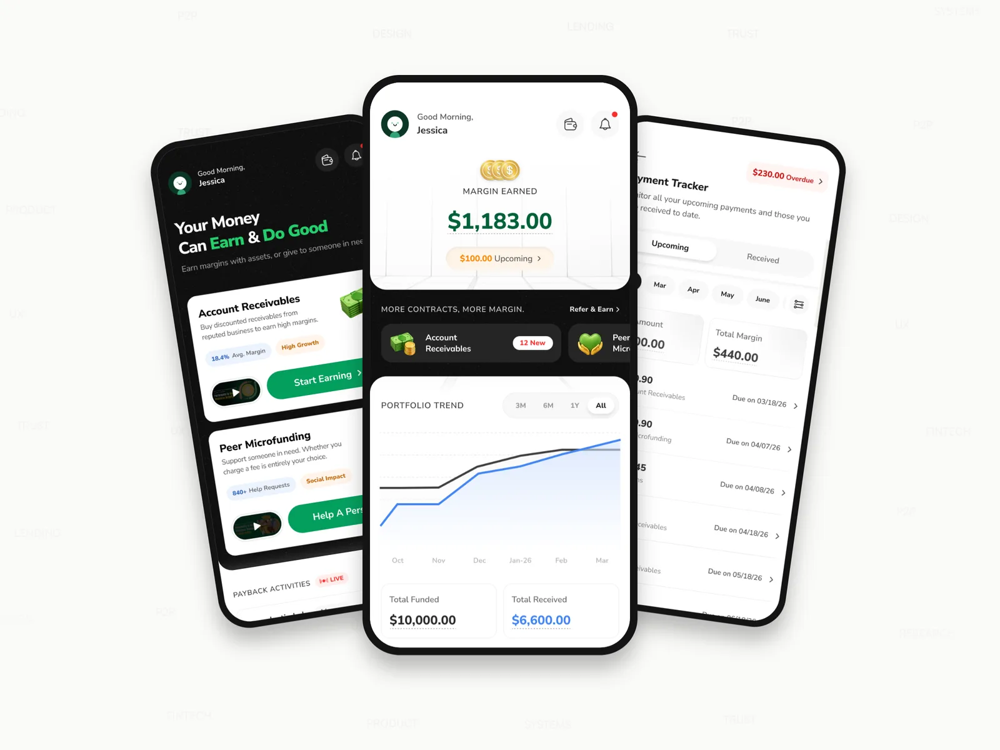
Rebuilding a lending app's home around informed trust
Lendee was still underperforming a year into launch. I redesigned both home states of the app to build the user trust that had been missing.
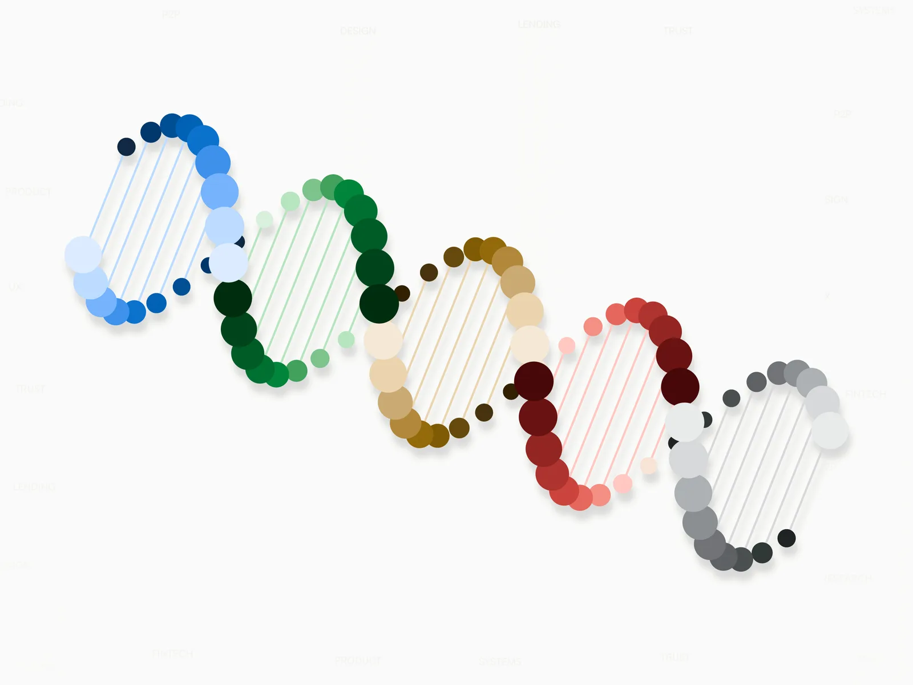
A design system a designer and an AI agent can both follow
Denefits' AI-assisted workflow was failing due to a poor design system. I rebuilt it from scratch into clear rules a designer or an agent could follow.
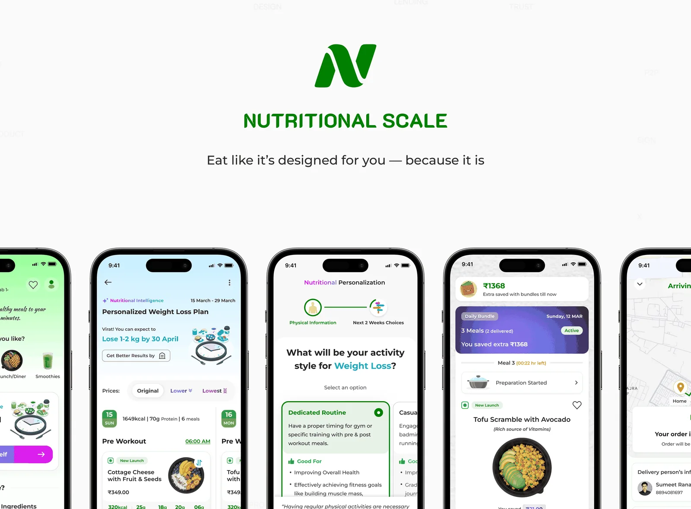
A personalized meal delivery startup I never got to launch
A detailed business plan, working prototypes, and a personalized meal-generation engine, and applied for Y Combinator. The right co-founders and investor interest never came together.
A little about me
02 · AboutWhat I bring to the table
03 · SkillsI let AI handle the first draft, and design the decision myself.
Where I've built it
04 · ExperienceUI/UX Designer
Own a fintech product end to end with full authority: research, UX, UI, and validation through to shipped production releases.
UX Designer
Drove B2B design decisions through user research, cross-functional prototyping, and design reviews.
Software Engineer (UI/UX & Frontend)
Designed across SaaS products and client work at an early-stage startup, spanning research, UI, and front-end.
Freelance Designer
Shipped 30+ projects worldwide, wireframe to visual design, earning a Top Rated badge in the platform's top 10%.
Let's work together.
Open to product design & related roles. If you're building something where clarity and trust matter, let's talk.
Turning a 3.4% activation rate into a trust problem, not a UI problem
The problem that started it, the research that explained it, and the redesign built from that thinking across both homes, before and after comparison below. Then the usability testing that validated the updates, and what changed once it shipped.
A lending app that wasn't hitting its numbers
01 · Context86% of Lendee's investors are American men between 30 and 55. It lets people invest money into two categories: Account Receivables (investors buy discounted invoices from vetted businesses and earn the margin when they're paid back) and Peer Microfunding (investors fund individuals directly, with any fee left entirely up to them).
This entire project started with the app's poor performance. The PM had already benchmarked me against published fintech investing research: even a year after launch, activation and repeat funding were both stuck well below where that research put industry norms.
Improve the product enough to move both numbers, in 8 weeks.
Chasing the wrong problem first
02 · ResearchThree signals pointed three different places before one of them held.
The investigation
How the testing was run
The usability testing results
- Only 3/8 users could explain what an account receivable was.
- 8/8 had no idea, from home, that charging a fee through Peer Microfunding was entirely their choice.
- 6/8 didn't find the supporter activity feed convincing enough to fund a first contract.
- Only 4/8 could find when their next payment was due.
- Only 1/8 visited the Opportunities tab when given an open prompt to explore.
- Only 3/8 could read the charts correctly at a glance.
- Only 2/8 found the overdue messaging reassuring, most called it stressful.
One root cause, two broken homes
03 · The InsightI used Claude to cluster the raw observations from both homes side by side, so I could read all seven at once instead of home by home. Two explanations covered most of them. A third explained what those two kept leaving out.
The frames I tested
That leaves two findings neither frame can reach. 6/8 didn't find the activity feed convincing, and only 2/8 found the overdue messaging reassuring. Nobody misunderstood those screens, and nobody failed to find them. They read them correctly and still didn't believe them.
Comprehension
Two of its three failures were people not understanding what they were being asked to buy.
Findability
Its two sharpest failures were people unable to locate what they came back to check.
Trust
The soul of any money product, and the thing neither home had. First-time home never got the chance to earn it. And for the user who trusted the platform once, returning home failed to keep that intact.
The principles I set before designing
04 · PrinciplesThese three principles are the summary of everything the research found. Even so, I slipped on the first one, and testing caught it later.
Education before action
Never ask for a financial decision the user doesn't understand.
Proof over persuasion
For a money app, credible evidence beats marketing copy.
Transparency over comfort
Show the full position, including the parts going badly.
What moved, what got cut, what's new
05 · StructureStructuring both homes came down to the same three questions: does it earn trust or spend it, does it belong on this screen at all, and what order it belongs in, shown here as a diagram, not the original files. The structure kept changing as new challenges came up. This section shows the structuring itself. The sections that follow explain why each choice was made, and the approaches I tried that got rejected.
First-time home
Returning home
Margin" Nudge
Earning trust before asking for money
06 · Act 1 · First Time HomeThe first-time home has one job: turn a new user into an informed first investment. The old screen optimized for the opposite: pressure over understanding.
Key decisions in redesign
I reframed the value proposition from "passive income" to "earn and do good."
Passive income also misrepresented Peer Microfunding's charitable side. The hero now reads with honest framing that sets the right expectations.
I led each category with a one-line explanation and a short intro video.
Placed right at the decision point: users now have clear knowledge of what these two categories are. Each card also got its own icon showing its nature, generated in Gemini.
I replaced the small arrow on each category card with a real 48px CTA.
A tap target that size clears the WCAG minimum with room to spare, easy to hit with a thumb instead of a small chevron that's easy to miss or mistap, especially for the 30-to-55 audience this product is actually built for.
I removed the "unlock your earnings" stepper entirely.
A stepper ending in "purchase a contract" frames a financial decision as a funnel, the wrong mental model for trust. That prime real estate now educates users on the two categories instead, which was the core thing missing before.
I rebuilt social proof as a live payback feed.
The real trust question is "are people actually getting their money back," and a live stream of real paybacks (name, amount, timestamp) answers it directly.
I gave video guides their own dedicated section.
Video guides were initially seen as a major lift to develop. The PM convinced other senior team members it was worth it to build trust. We launched with three, covering the basics, with plans to keep growing the library over time.
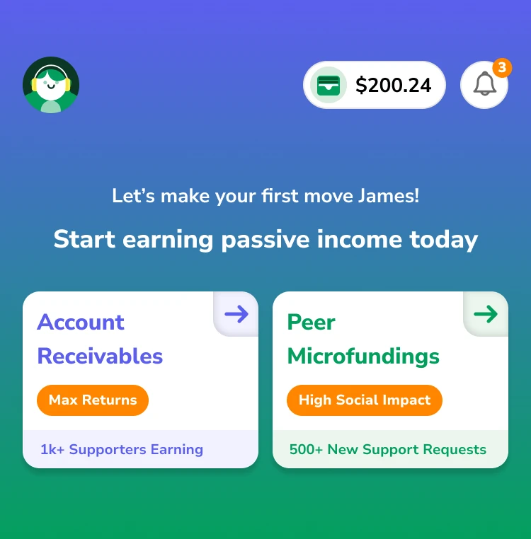
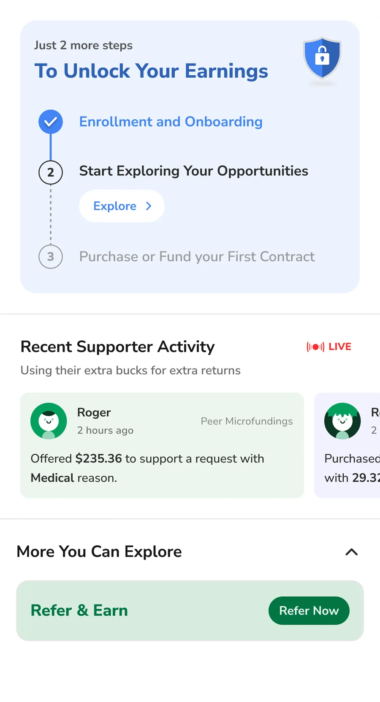

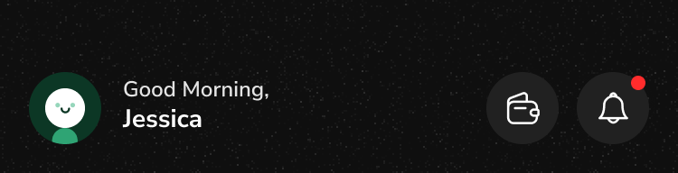

Validated in final usability testing
2 of 8 were the same testers who'd flagged these exact problems in the first round, brought back deliberately to see if the fixes landed. The other 6 were new to the redesign.
Explored and rejected
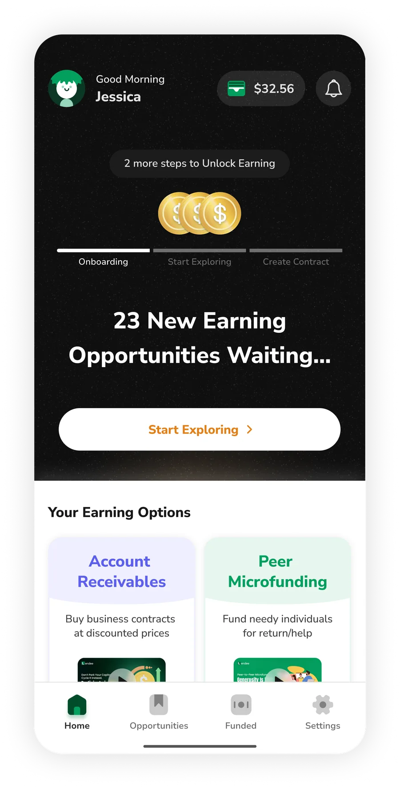
Before the first usability test, this hero section had a minimized stepper, a live count of new opportunities, and a single "Start Exploring" CTA, still guiding users toward a first contract.
- 6/8 of participants landed on the Opportunities tab not knowing what to expect there, and couldn't explain the categories in that moment
- Neither I nor the rest of the team caught this ourselves, we misaligned with the first principle we set, "Education Before Action." We'd already built the category intro and video tutorials, just placed them in a secondary spot, and most participants tapped "Start Exploring" the moment they landed, before ever scrolling down to see them.
- The requirement was an 8-week timeline. Rebuilding this hero from scratch and working through internal feedback pushed the project to 10.
Sustaining trust through transparency
07 · Act 2 · Returning HomeFor a returning investor, the home has to answer important money-related questions without confusion. The old home didn't answer either of them directly, and buried what it did show in data that wasn't easy to understand.
Key decisions in redesign
I built the hero around the question that matters most: how much I've earned.
The hero now leads with total margin earned, and shows how much more is coming right behind it. Kept at a bigger size to stay easily readable for the product's 30-to-55 audience.
I added a highlighted nudge to fund another contract.
The old home completely missed this, which is the engine of the business. Now it sits right next to your earnings, showing users how they can get more margin.
I replaced the old charts with one clear trend line.
The striped, confusing bar charts are gone. A single portfolio-trend line now answers the question that matters: "how is my money doing." A clear comparison of funded and received over different timelines.
I gave upcoming payments a clear, dedicated list.
The home now lists the next 4 upcoming payments (amount, category, due date), backed by a dedicated tracker. It was the single most-requested fix in support.
I gave users a complete, transparent breakdown of their money on the platform.
A visual split shows how much has come back against what's still outstanding, answering "how much have I gotten back" at a glance instead of making users do the math themselves.
I gave overdue and collections a calm, handled treatment.
These anxiety-inducing moments now sit in a contracts summary with reassuring, action-oriented language, each with its own dedicated page for further detail.
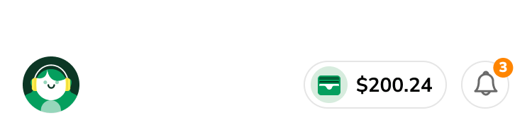
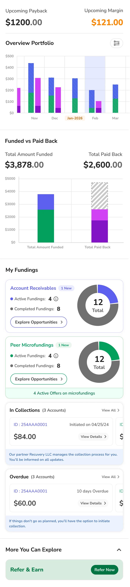
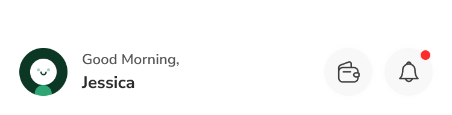

Validated in final usability testing
2 of 8 were returning for the same reason, to confirm their specific complaints had actually been resolved. The other 6 were new.
Explored and rejected
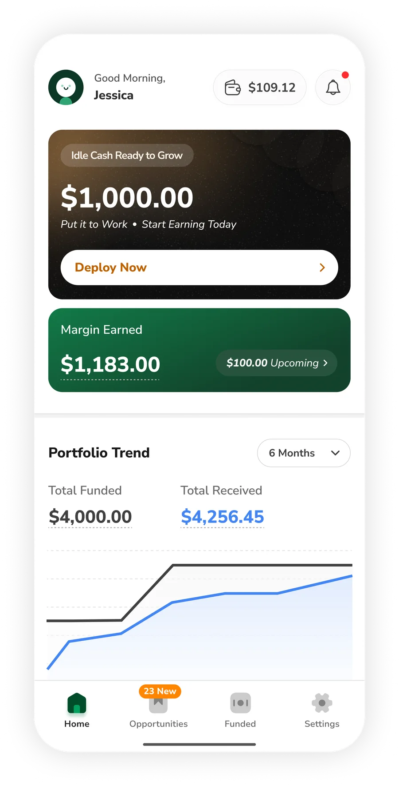
Before this reached usability testing, this hero led with $1,000 of idle cash and a "Deploy Now" CTA, with wallet balance shown right in the header.
- Most of the design team flagged "Deploy Now" as a push, not a nudge, a $1,000 idle-cash prompt read as sales pressure on a home meant to build trust
- The PM flagged that wallet balance sitting in the header could read as demotivating when the balance was low, and pointed out a person can add funds at the final step of the contract-creation flow anyway
Every section across both acts also got a real visual and interaction upgrade:
- Transitions that don't jar
- A color system that means something, not just decoration
- Spacing that guides the eye honestly through the data
- Touch targets and contrast sized to actually work, not just to look right
But that was the byproduct, not the goal. The actual work was getting the data, structure, and overall story right first.
A dedicated payment tracker
The tracker brings every past and upcoming payment into one place, filterable however you need, with the total amount and total margin shown for whatever period you pick. Upcoming answers "what do I owe, and when." Received answers "what have I already gotten back." This was entirely missing in the old app, and it proved to be the most valuable update in this shipment.
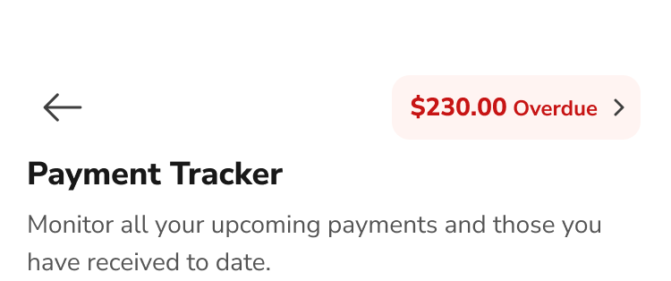
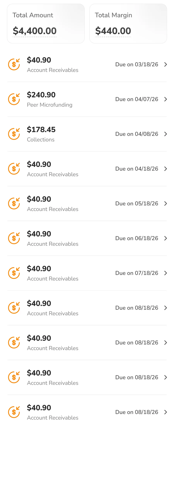
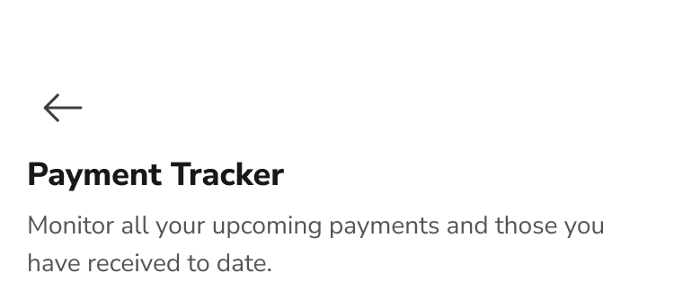
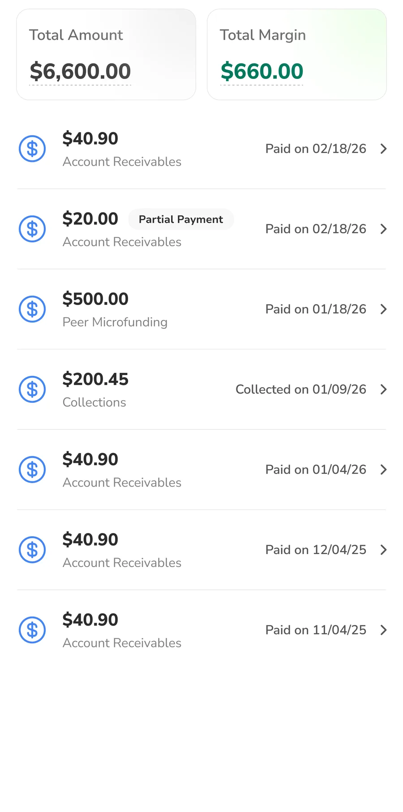
One suggestion that shipped after handoff
09 · EngineeringWhere the PM overruled me
10 · A Real DisagreementLendee's referral program isn't well engineered yet: the reward is stated as a flat cash amount with no real explanation behind it, in practice, just an extra dollar sitting in the wallet. Surfacing it prominently on a home built around trust felt premature to me.
- The PM held firm that a Refer & Earn nudge needed to be in front view for the growth loop it drives, regardless of the program's maturity, so it shipped there.
What changed after 2 months of launch
11 · Business OutcomeI understand production data alone can't isolate every factor behind a shift like this, seasonality or marketing could play a part, but the usability testing earlier already tied the behavior directly to the redesign itself.
Both numbers are still under industry benchmark: 5.0% against 8-12% for activation, 29% against 40%+ for repeat funding. Two months is early, but there's another thing to improve after the home fixes: the detail pages of both categories, where 67% on Account Receivables and 53% on Peer Microfunding never continued to fund after opening one.
The improvement is functional, not decorative: more contracts funded, more revenue, a home that works harder for the business, not just one that looks better.
What I'd do differently
12 · ReflectionIn a major redesign like this, I'd get the first version of a risky direction in front of users as early as possible, accepting going in that it won't be close to final and will draw a lot of feedback. That's exactly what was missing when the stepper direction only got tested after the full redesign was done, costing two more weeks.
Turning 343 loose colors into rules a designer and an AI agent both follow
The problem that started it, the rules and architecture that governed the build, the foundations they produced, and the component library on top, interactive below. And the gates each step needs to pass. Then the real screens that tested it, and the handover that followed.
Denefits realized it needed a design system
01 · ContextDenefits is the platform a healthcare business uses to put its own customers on a payment plan, so they can pay for treatment over time instead of all at once. It has two sides: the business side, where plans are created, managed, and money is watched arriving, and the customer side, where a customer checks what they owe and what's due next. Each side ships as both a mobile app and a web panel, so the system has four surfaces to hold together, not one.
"Our AI agents can't produce consistent results, because there's nothing consistent for them to follow. We need to build an industry standard design system."
PM's briefThat was the brief. Not make it prettier, but make it a system two very different readers could follow the same way: a designer picking a token, and an agent parsing the rules as context.
Keep the brand colour near #0076D9
Build for a dark mode that didn't exist yet
Everything else, spacing, typography discipline, components, and how any of it should actually be used, was mine to define.
Collaborating with an AI agent
02 · My PartnerI worked alongside Claude, connected directly to Figma through an MCP server, which gave it live read and write access to the file.
It is genuinely capable at the repetitive, fixed parts of this project, and that is the big part of it. Work like this, done properly, at this scale, usually takes a small team months. Directing the agent instead of doing it by hand is what got it done solo, in under a month.
- Set the core rules for the whole project, binding me as much as the agent.
- Provided the context, the requirements, and the checks that had to pass at each stage.
- Reviewed every proposal the agent made, and approved, corrected or rejected it.
- Declared hundreds of variables and styles, and generated 551 component variants against the standard.
- Researched the standards being cited, and cross-checked every new build against the rules for that level.
- Surfaced issues during the audit that I had very nearly looked straight past.
A design system in name only
03 · AuditThere was already a design system, in name. A colour palette existed. A type scale existed. Spacing tokens and components did not exist at all.
The first thing I put the agent on was the audit, to find out how far the file had actually drifted. Generated rather than eyeballed, and the numbers it came back with were the true starting point.
Even the parts that did exist were not being followed, because nothing said how to use them. There was no written guidance for a designer, and over years of different people touching the same file, the palette and the type scale were broken in more and more places, until the design system was closer to a memory than a constraint. And following it wouldn't have saved anyone: the palette itself carried a defect nobody had measured, so a designer who used it correctly still ended up with an inconsistent result.
There was nothing here to refine. It was a complete build from scratch.
The soul that steered everything
04 · Core Rules & ArchitectureNone of this runs on taste. All five of them governed the entire process, and every one of them bound the agent exactly as hard as it bound me.
1 · The layer model
Non-negotiable standardI didn't invent this model. I took it from Figma's own documentation on variables and adopted it wholesale, because it is the thing that lets a system absorb change instead of breaking under it: a value can be repointed underneath without a single screen being touched, and the structure holds as the product grows.
Primitive
Raw values.
Semantic
Meaning.
Component
The reusable unit.
Product
What the user sees.
Breaking that chain means sooner or later ending up with the same mess of inconsistency on the board that I started from.
2 · Final approval is mine
The agent cannot declare a single variable, token or style, not even one line on the Figma board, without sign-off. Not a courtesy, a gate: nothing enters the system that I haven't looked at and approved first.
3 · File architecture
A Figma file's architecture decides what a new person sees first, and in what order. So I structured it to walk a reader through the system in the order it was built: foundations, then the components assembled from them, then the product those components make, with the documentation and archive kept out of the way at the end. It is also built to grow, a new foundation adds a page, never a new layer of structure.
I redefined this structure more than twice over the project, each time because the previous shape created a problem the next phase ran into.
4 · Variable architecture
The variable collections are invisible on the canvas and load-bearing everywhere. I built three collections of them, mapped directly onto the layer model defined at the start, so the structure underneath the file matches the structure on it.
- 4Where it started. A separate primitive and semantic layer each for colour and for dimension.
- 2Collapsed to one of each. Cleaner, until light/dark and mobile/desktop modes arrived and it began duplicating tokens that had no reason to vary.
- 3Settled. One primitive layer, and the semantic layer split by mode axis, so nothing pays for an axis it doesn't use.
Primitive133
Semantic A · Colour64
Semantic B · Dimension88
5 · Validate every step against industry-grade metrics
Every token and style, at every stage, colour, breakpoint, spacing, typography and the rest, went through the same cycle: build, check, report, revise, rebuild, until it passed on its own evidence, not until it looked right.
The loop is the rule. A stage was never done because it had been through the cycle once; it was done when it passed the checks that applied at that level.
Everything depends on this
05 · ColourColour is the foundation the rest of the system stands on. It has to land before anything built on top of it can make sense, and it is the only layer dark mode actually needs.
Primitives
343 colors in live use collapsed to 75 disciplined primitives (57 hued tones across the five families drawn below, 16 alpha steps that elevation is built from, and the base values underneath both). Every tone below exists because something needs it, and nothing exists because the scale looked incomplete.
The palette
57 hued tones · 5 families- 6Where it started. Six families planned, with #0076D9 given as the one fixed input and cyan carried in two roles, secondary brand and info.
- 1%The brand moved. White on #0076D9 measured 4.57:1, clearing AA by 1.6% with almost no headroom. Darkening 1% at the same hue to #0073D4 bought 4.75:1, and stays indistinguishable side by side.
- 5Cyan dropped. Its ceiling at 500 is 0.097 against the brand's 0.172, so it could only ever be 55% as intense. Hierarchy comes from weight, not a second hue. Violet is named as the reserved next family and left undrawn.
Semantic Tokens
The primitives feed 64 semantic tokens: the actual vocabulary a designer or an agent works in, every one of them defined for light and dark from the start.
7 groups in 2 modes
- 57Where it started. Inherited from the abandoned attempt, light mode only and never audited. Archived rather than deleted, so the old palette stayed readable until the new one was proven.
- 60Rebuilt, light and dark from the start. Then a real screen caught what the paper audit could not: Border/Strong failed the 3:1 control boundary in both modes, and Focus and Brand held the same value, so a focus ring on a primary button measured 1.00:1.
- 64Grown by its consumers. Elevation asked for three; the rest came from Button and Status needing states the foundation hadn't drawn yet. Every addition was a gap the foundation could not see while it was only being measured against itself.
Gates it needs to pass
Eight of the 75 primitives are still not consumed by any semantic token. A primitive with no consumer is a value with no job, so the palette can be tightened further until nothing is left orphaned.
The product chose the typeface
06 · TypographyA typeface is the one foundation a user reads every second they're on the screen, and the only one that can quietly make a product feel wrong without anybody being able to say why. Pick it on the thing your product actually does, and it stops being decoration.
Primitives
28 type primitives across five ramps. Every one is named by its value.
Every type primitive
5 ramps · 28 valuesStarted with Inter, but realised Nunito Sans has softer, rounder letterforms, giving the dashboards a friendlier, less rigid feel than Inter.
Text Styles
Figma has no composite type variable, so a semantic token here is one scalar, not a bundle. The 52 tokens resolve into 10 Text Styles, the thing anyone actually picks: one style carries family, weight, size, line height and tracking together.
10 styles in 2 modes
Gates it needs to pass
The layer that decides how dense a screen feels
07 · Space & SizeGetting these wrong makes the entire product cluttered and hard to scan, which nobody wants.
Primitives
15 primitives across two ramps. Every one is named by its value.
Every space and size primitive
2 ramps · 15 values- 4Orphans found. Space/2, Space/96, Space/128, Size/64, no consumer on the first audit.
- 2Cut outright. Space/128 and Size/64, no real job to save them.
- 1Kept by inventing one, then cut anyway. Space/2 got a semantic built solely for it, Inline/Nudge. Both deleted once the system flipped mobile-first.
- 2Added later. Space/64 and Size/40, only because desktop scaling asked for them.
- 15Final. 8 Space, 7 Size, every one with a live consumer.
Semantic Tokens
23 tokens, and the names carry the job rather than the number.
5 groups in 2 modes
Gates it needs to pass
The spec came before the set
08 · IconographyPick a library first and the spec just gets reverse-engineered from whatever arrived. So I wrote the rules first, proved them against eight icons drawn to stress the spec, and only then let a real library take the test.
The Rules
Seven properties, checked against every icon whether it's drawn in-house or imported. This is the durable artefact; the set behind it is disposable.
The specification
what every icon must satisfy- Stroke started scalar, proportional to the icon. 1.5 at the 24 master, scaling down to 1.0 at 16 and up to 2.0 at 32, the same way the icon's own geometry scales. But I noticed that a 1.0 stroke at 16 reads visibly thinner than the 14px label beside it.
- Dropped to constant. An icon should carry the same visual weight as the text beside it, and across every button size that text barely moves, so the stroke shouldn't either. 1.5 now holds flat across 16, 20 and 24; only 32, which stands alone with nothing to match, scales up to 2.0.
Keyline template
shown at 6×A square reads heavier than a circle of the same dimension, so the square keyline is smaller, equal measurements would give unequal optical weight. An icon is drawn to whichever keyline matches its dominant form.
Library
73 icons in 9 categories, 292 variants, adopted from Lucide, MIT, open source. One icon is hand-drawn, Tooth, because dental treatment is the domain and no general set carries one. This is the base set, not the final one; more icons get built or adopted as the product asks for them.
The library
pick a category, then an iconA representative set from the documented 73, real Lucide artwork at every size the spec defines.
Gates it needs to pass
The most interactable component all platforms
09 · ButtonEvery property below, fill, ink, border, height, padding, radius and the icon it carries, resolves to a token already declared in the semantic layer built earlier in this case study. Nothing here invents a value; the component only asks the layer beneath it to answer.
Four axes
Each axis defines its own vocabulary, and earns the axis by changing a token: Type changes the fill treatment, Colour what the action means, State the fill, and Size every dimension the button has.
Type
hierarchy from weightColour
meaning, not decorationState
focus is not optionalSize
jobs, not tastesLibrary
The source component set: 180 variants across four axes. Type, Colour, State and Size, with label text and the two icon toggles kept as component properties rather than axes.
Button simulator
I needed to redirect the agent multiple times to land this mechanism for getting every required button state right: the first proposals either missed states outright or duplicated them across combinations.
Gates it needs to pass
What else is in the system
10 · The RestSix deep dives is already a lot to ask of a reader. These six aren't walked through, and every one went through the same cycle as the ones that were: build, measure against a gate, publish a dated certification.
Foundations
Components
None of this is a finished set, and it isn't meant to be. The system is built to scale on purpose: every foundation and every component is its own page with its own gate and its own date, so whatever the product asks for next, more components, a density mode, a second brand, a real motion spec, arrives as another page rather than a rebuild of what's already there.
The last test ran on real screens
11 · Test ScreensColour was tested against colour. Typography against typography. Spacing against spacing. Every one of those checks is the system marking its own homework, and a gate that only ever tests one thing at a time can't see what happens when five of them share a screen. So the last test ran the system against real, existing Denefits screens.
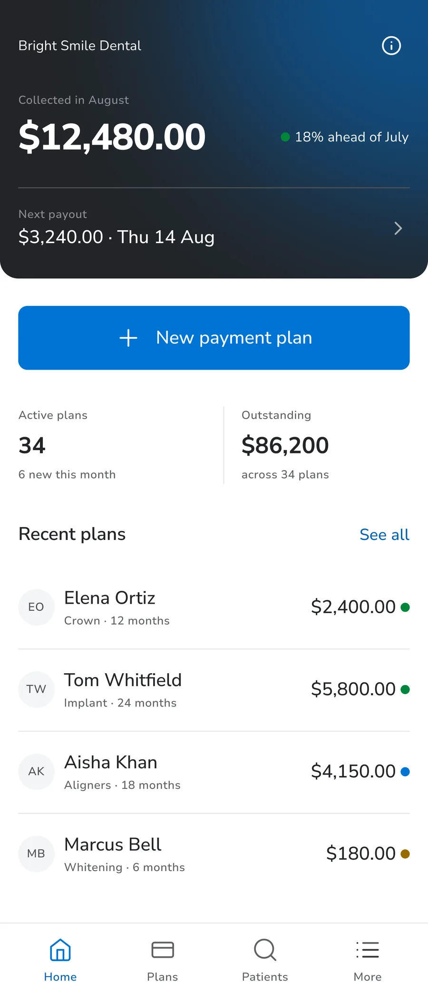
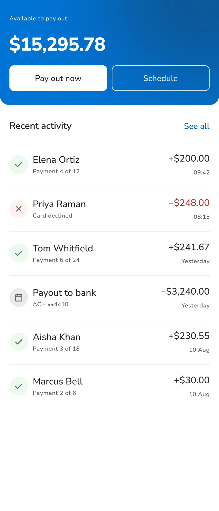
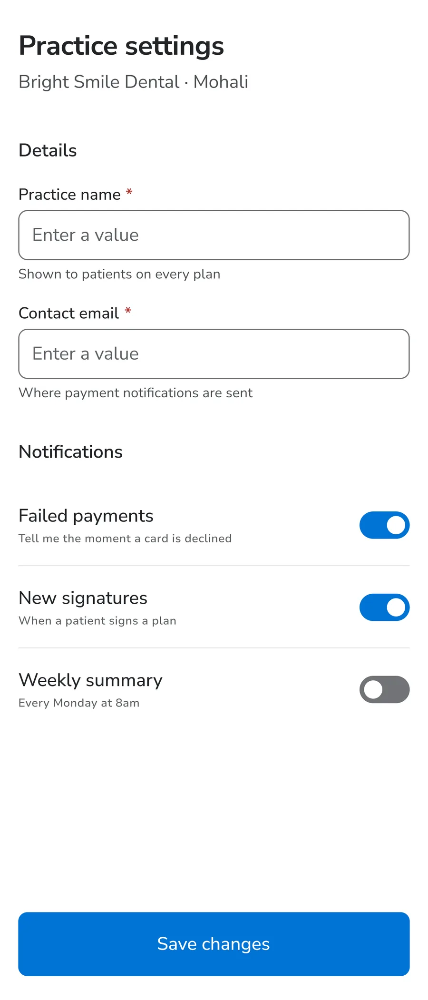
Screens are the only consumer that asks for things a component never will. When the icon set was chosen, the demand was read off these real screens rather than from a list of popular icons, and five icons exist only because they asked for them: Signature, Bank, ArrowUpRight, ArrowDownRight and Retry. None was in the first draft.
Without this, none of it transfers
12 · DocumentationA system nobody can read is a system of one. Everything above is worth nothing the moment a new designer or an AI agent has to work inside it and can't find out how it was built, how it behaves, or what breaks if they change something. Documentation isn't the write-up at the end; it's the part that makes the rest usable.
Part II is the one that matters most now that the system isn't mine alone to touch. Another designer, an engineer or QA can propose a change; the standard for accepting it is the same one the audit itself runs on: a token has to earn its place, or it doesn't get added.
What I refused to build
13 · RestraintThey all were built first, then removed. That's the part I'd point at. Deleting your own finished work is harder than not starting it, and it's the only way a scale stays honest.
Width tokens
They looked like infrastructure every system has. Nothing consumed them. A width with one consumer is a constant, not a token.
A tablet breakpoint
Tablet gets the desktop layout at a narrower width. A third tier would have cost a mode from a four-mode platform cap.
Popovers
Replaced by a rule instead: dialog for desktop, bottom sheet for mobile.
What changed, measured against itself
14 · Where It LandedThis system was built, certified, and then handed off. The business side's Collections view is the first surface built entirely from it by someone other than me, with more queued as each surface comes up for its own update. It shows what disappeared, and what replaced it: how much a designer or an agent had to choose, guess or ask about before, and how little now.
- Rebuilt the business side's Collections view entirely from tokens and styles I made.
- Before: days of back-and-forth and an inconsistent screen. After: blank frame to review-ready in an afternoon, with the same consistency as every other screen.
- Tokens export via Style Dictionary: CSS variables for the two web panels, a Swift enum and Android XML for the two apps. I mapped the export names, a frontend engineer wired the build.
- A GitHub Action pulls Figma's Variables API on every publish and opens a PR with the diff, auto-generated, still human-approved before merge.
What I'd do differently
15 · ReflectionIn a system like this, I'd schedule a full re-audit after every foundation and component ships, not assume the rules hold on their own. That's exactly what was missing when a certified button shipped with an icon toggle wired to nothing, passing every gate for weeks before anyone actually tried using it.